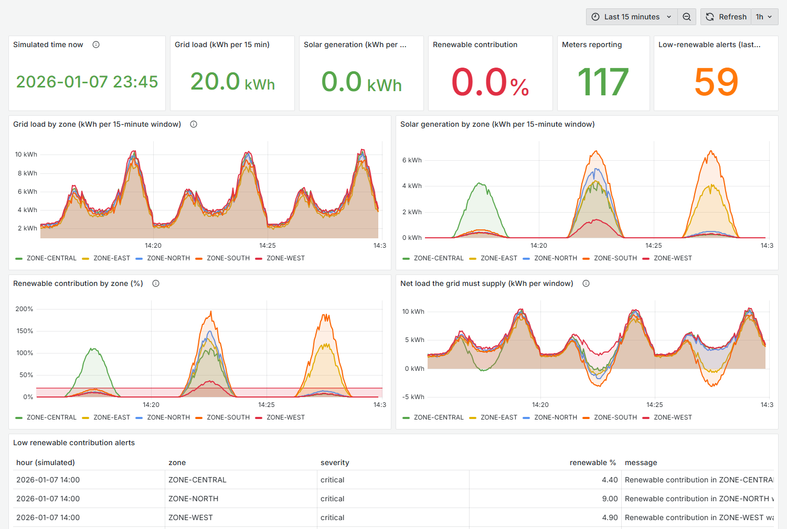
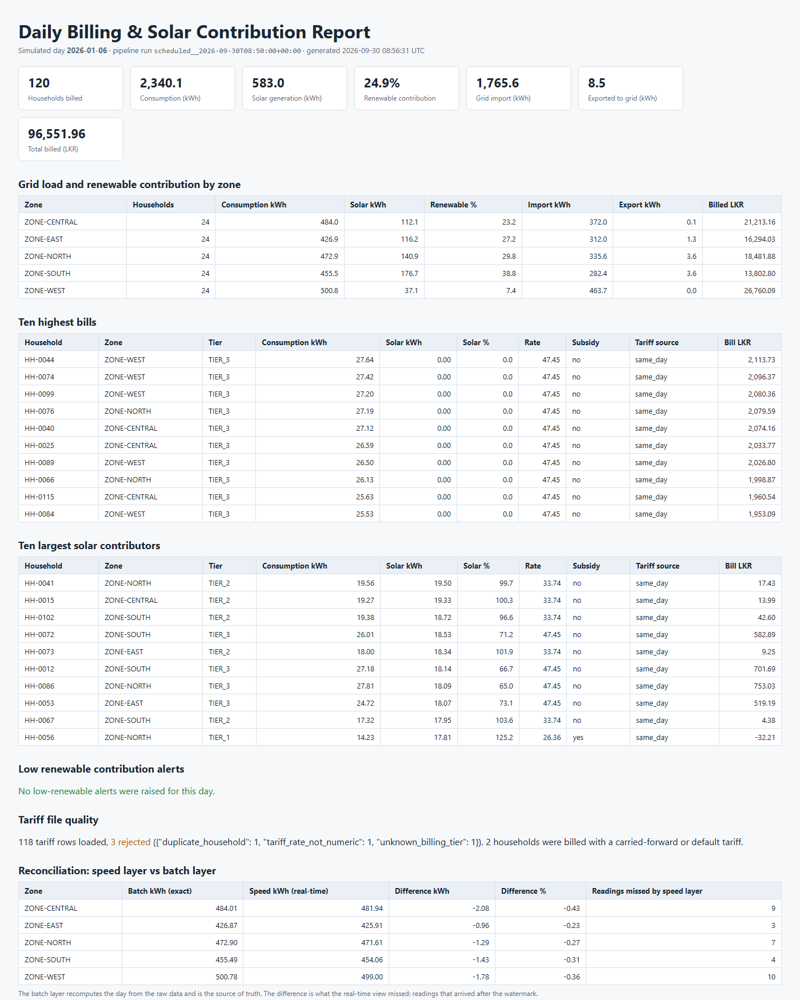
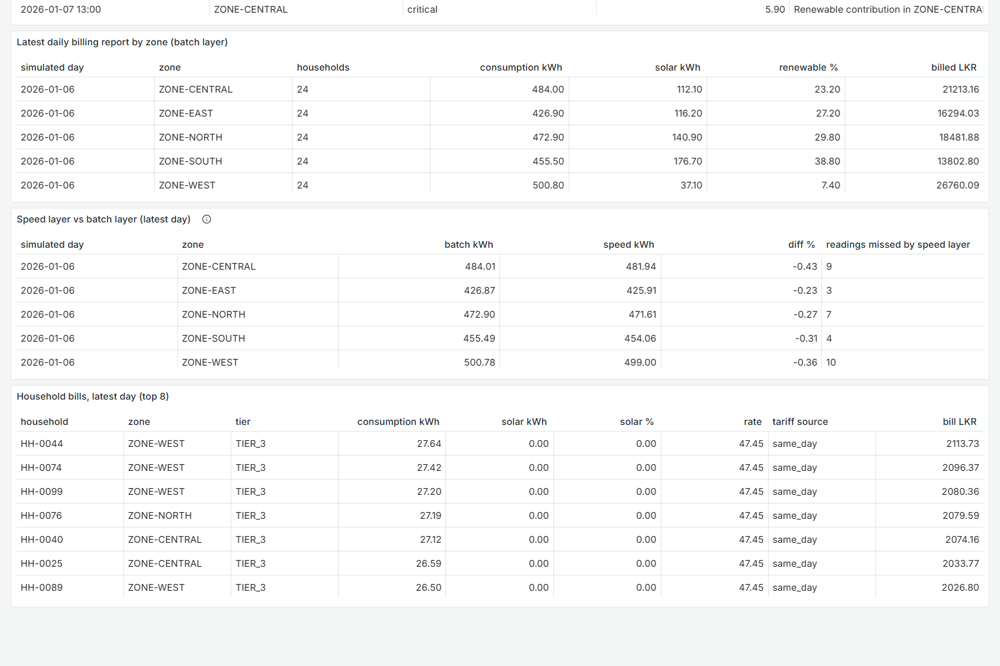
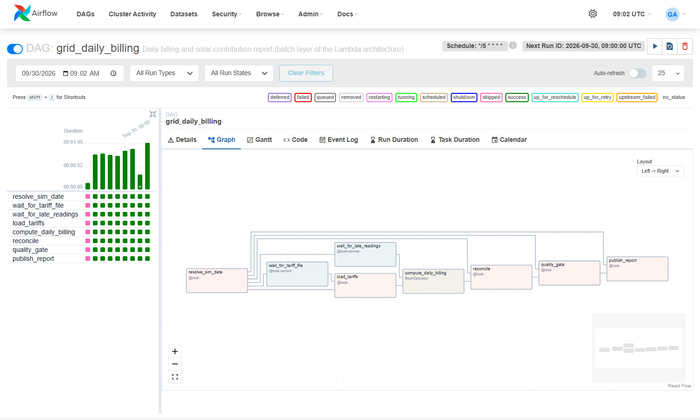
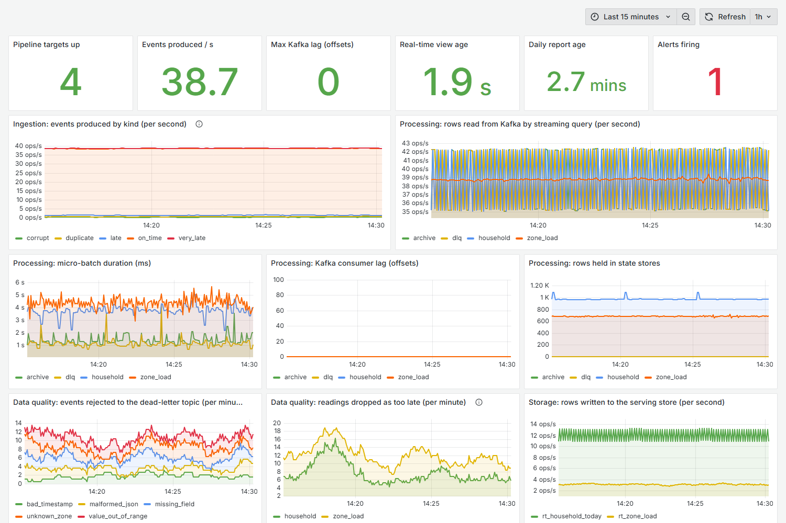
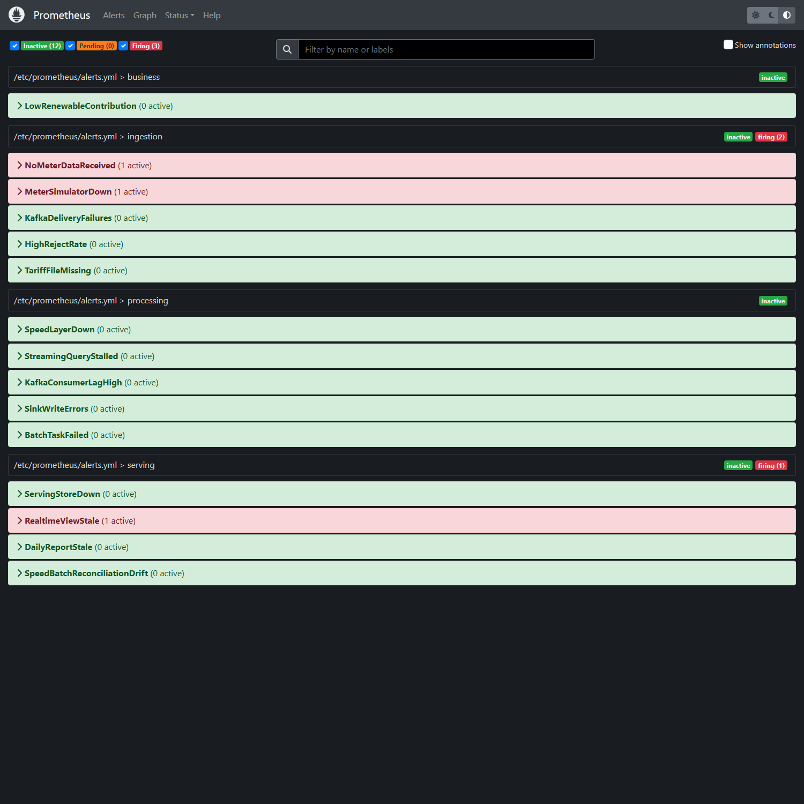
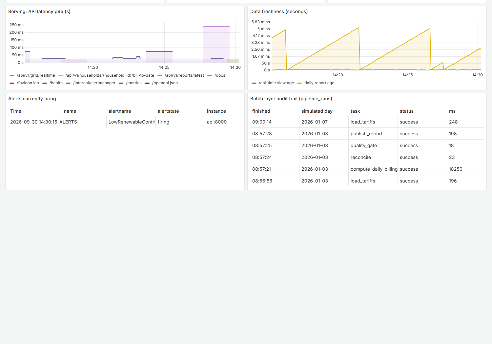

| Group members | [Name 1 - index no.], [Name 2 - index no.], [Name 3 - index no.] |
|---|---|
| Architecture | Lambda (speed layer + batch layer + serving layer) |
| Stack | Kafka, Spark Structured Streaming, Spark batch, Airflow, Parquet on an S3-compatible object store, PostgreSQL, FastAPI, Prometheus, Alertmanager, Grafana |
| Simulated clock | 1 simulated day = 5 minutes of wall-clock time (288× speed-up) |
| Repository | [link to the Git repository] |
A utility needs two answers from the same meter data. The control room asks what is the grid load and the solar contribution in each zone right now? The billing department asks what does each household owe for yesterday, once yesterday's tariff file is applied? The first needs an answer in seconds and tolerates a small error. The second can wait a few minutes but must be exact, auditable and re-computable.
This report describes a platform that answers both. It ingests a continuous meter stream and a once-a-day tariff file, processes them in a speed layer and a batch layer that share one set of transformations, serves a merged view through an API and dashboards, and measures its own health and its own accuracy. Over the 6 simulated days reported here it processed 75,770 meter events, and the batch layer corrected the real-time totals by 0.16% to 0.59% per zone.
We chose Use Case 3, Smart Grid Energy Monitoring & Billing. A utility company wants real-time visibility into grid load and renewable (solar) contribution from smart meters, reconciled daily against tariff and billing data that is produced once a day.
Business question. What is the current grid load and renewable contribution by zone, and what will each household's bill look like once the daily tariff data is applied to its consumption?
We read that question as two questions with different service levels, and that reading drives every design decision that follows.
| # | Requirement | What it demands from the platform | Where it is met |
|---|---|---|---|
| R1 | Live grid load and renewable mix by zone | Latency of seconds. A small, bounded error is acceptable: an operator acts on trends, not on the last decimal. | Speed layer, /api/v1/grid/realtime |
| R2 | Alert when renewable contribution is considerably low | Evaluated on the stream, per zone, only in daylight hours, without false alarms from half-filled windows. | Speed layer, grid_alerts, topic grid.alerts |
| R3 | Daily bill and solar contribution per household | Exact. Every reading counted once, including late ones. Reproducible from raw data, and re-computable when a tariff is corrected. | Batch layer, daily report |
| R4 | Two sources with different rhythms | A continuous event stream and a file that exists only once per day must be joined. | Both layers |
| R5 | Observable, not just functional | Logs, metrics and alerts at every stage; a way to diagnose a failure and to know the data is fresh and correct. | Section 6 |
Simulated environment. 120 households in five grid zones. Each meter reports consumption and solar generation every 15 simulated minutes (about every 3.1 s of wall-clock time), giving about 38 events per second. Solar penetration differs by zone (20% to 45% of households), and each zone-day has its own weather, so roughly one zone-day in four is overcast. One tariff file is delivered per simulated day.
A Lambda architecture keeps an immutable master dataset and computes two views from it: a batch view, recomputed from all the raw data and therefore exact, and a real-time view, computed incrementally from the stream and therefore fast but approximate. A serving layer merges them. A Kappa architecture removes the batch layer: everything is a stream, the log is the source of truth, and reprocessing means replaying the log through a new version of the streaming job.
We chose Lambda. R1 and R3 have opposite requirements, and the daily tariff file makes billing a batch problem by nature. A bill is money: its correctness must not depend on a streaming tuning parameter. Lambda lets each layer be good at one thing, and we accept and mitigate its known cost, which is maintaining two processing paths.
| Criterion | Lambda (chosen) | Kappa (rejected) |
|---|---|---|
| Latency | Real-time view is updated every 5 s; a closed 15-minute window is visible a few seconds after it ends. The exact daily bill is ready about 83 s after simulated midnight. Both meet their requirement. | Equal for R1. For R3 Kappa can emit a running bill continuously, but that bill is not final until the tariff file arrives after midnight, so the extra immediacy has no business value. |
| Correctness and late data | A stream must bound its state with a watermark; whatever arrives later is dropped. Our speed layer uses a 30-minute watermark, and the simulator delays 2.5% of readings by 20 minutes to 3 hours. The batch layer has no watermark: it reads everything that reached the lake and de-duplicates exactly. Measured effect: the speed layer under-counted consumption by 0.16% to 0.59% per zone; the batch layer corrected it. | The bill would be produced by the streaming job, so its accuracy would be set by the watermark. A larger watermark reduces the loss but delays every result and enlarges state, and no value makes the loss zero. For a control-room chart that is fine. For invoices it is not. |
| Replay and reprocessing | Reprocessing one day is one idempotent job over one Parquet partition: airflow dags trigger grid_daily_billing --conf '{"sim_date":"2026-01-02"}'. We ran this; it rebuilt the day in 18 s with identical totals. A corrected tariff file is applied the same way. |
Replay means re-reading the topic from an old offset with a second copy of the job, then cutting over. It needs the whole history retained in Kafka, and it cannot easily target "only 2 January for the households whose tariff changed". Possible, but heavier for the most common correction in billing. |
| Fit with the batch source | The tariff file is a file. The batch layer waits for it with a sensor, validates it as a unit (checksum, row count, reject ratio) and joins it to a closed day of usage. | The file would have to be turned into events on a compacted topic and joined with a stream-table temporal join, while usage for a day arrives before its tariff. The job must hold a full day of per-household state or re-emit results. More state, more edge cases, no gain. |
| Consistency | Two views can disagree. We make this explicit instead of hiding it: closed days are served from the batch view, the current day from the real-time view marked provisional, and a reconciliation task measures the gap every day and alerts above 5%. | One view, so no disagreement. This is Kappa's real advantage, and we give it up knowingly. |
| Cost and complexity | Two code paths and an orchestrator to operate. Compute cost of the batch layer is small: one job per day, about 21 s here. | One code path and no orchestrator for processing. Lower engineering cost. Higher steady-state cost: larger streaming state and long Kafka retention. |
The standard criticism of Lambda is that business logic is written twice and drifts. We addressed it directly rather than accepting it.
src/processing/transforms.py holds validation,
de-duplication, zone windows, household daily totals, the tariff join and the billing rules as
functions of a DataFrame. The streaming job and the batch job call the same functions; only the
source and the sink differ.gridlib); the Spark expressions are built from them, and a test asserts that Spark
and the reference implementation produce the same bill row by row.reconcile task compares the two views for
every day and exports the result as a metric with an alert.| When (simulated) | What happens | Layer |
|---|---|---|
| All day | Each meter publishes a reading every 15 minutes to meter.readings. Spark validates it, sends rejects to the dead-letter topic, archives valid events to the lake, and updates zone windows and household running totals in PostgreSQL every 5 to 10 s. | Sources, ingestion, speed |
| 10:00 to 15:00 | For every closed hour the speed layer checks each zone's renewable contribution and raises an alert under 20%. | Speed |
| 00:00 next day | The Airflow run for the finished day starts. The tariff dropper uploads the day's CSV and then its manifest. | Batch source, orchestration |
| + about 50 min | The sensor sees the manifest. The file is checked (SHA-256, row count), validated row by row, loaded; bad rows are quarantined. | Batch ingestion |
| + about 3.6 h (45 s) | Grace period for late readings ends. Spark batch reads the day's raw Parquet, de-duplicates, totals each household, joins tariffs, applies billing rules and swaps the day's bills in one transaction. | Batch processing |
| + a few seconds | Reconcile against the speed layer, pass the quality gate, publish the HTML and CSV report. The API now serves the exact bill for that day. | Batch, serving |
Each choice is tied to a constraint of this use case, with the alternative we considered.
| Layer | Choice | Why it fits this use case | Alternative and why not |
|---|---|---|---|
| Stream ingestion | Apache Kafka (KRaft), topic meter.readings, 6 partitions, key meter_id | Meters must never be blocked by a slow consumer, and the same events feed four independent queries. Kafka is a durable, replayable log, so a restarted query resumes from its checkpointed offset with no loss. Keying by meter keeps each meter's readings in order and spreads 120 keys evenly; keying by zone would give five hot keys. | RabbitMQ: no replay after consumption. Direct HTTP ingestion: couples meters to processing. MQTT is what real meters speak, and would sit in front of Kafka. |
| Batch ingestion | Landing zone in an S3-compatible object store, CSV plus manifest | A billing department delivers files. The manifest, written last, makes the upload atomic from the reader's side and carries a checksum, so a truncated file is detected. | Putting tariffs on Kafka: loses the "whole file is valid or refused" check. |
| Stream processing | Spark Structured Streaming | The use case needs event-time tumbling windows, a watermark for late data, stateful de-duplication and checkpointed exactly-once progress; all are built in. Micro-batch latency of seconds is ample for 15-minute windows. Most important for Lambda: it shares the DataFrame API with the batch layer. | Apache Storm: lower per-event latency, which this use case does not need, but windowing, state and exactly-once must be assembled by hand, and its API is unrelated to the batch job, so logic would be duplicated. Flink: excellent, but a second engine. |
| Batch processing | Spark (batch) | Partition-pruned scans of Parquet, exact global de-duplication, a join with reference data. Same code as the speed layer. | Plain SQL in PostgreSQL: would not scale past one node and would not read the lake. |
| Orchestration | Apache Airflow | The batch path is a dependency graph with external waits: a file that arrives late, a grace period, a Spark job, checks, a report. Airflow gives sensors, retries, a per-day run history and parameterised re-runs. | cron: no dependencies, retries or backfill. Triggering from the streaming job: ties batch correctness to stream health. |
| Master dataset | Parquet on an S3-compatible object store (SeaweedFS locally), partitioned by event_date | Immutable, append-only, cheap, columnar. A daily job reads exactly one partition. The storage choice is a connection string: the same code runs on S3 or HDFS. | HDFS: same role, heavier to operate locally. Cassandra: built for key lookups, not full-partition scans. Keeping history only in Kafka: that is Kappa. |
| Serving store | PostgreSQL | The views are small and keyed (zone × window, household × day). The sinks must be idempotent, so we need upserts; the daily swap must be atomic, so we need transactions; the API and Grafana need joins. PostgreSQL gives all three. | Cassandra: the right answer at millions of meters for write throughput, but no transactions or joins, so idempotent swap and the merged view would move into application code. |
| Serving | FastAPI, Grafana | The brief asks for an API endpoint; FastAPI documents itself (OpenAPI). Grafana reads both PostgreSQL and Prometheus, so one tool shows the business view and pipeline health. | A custom web front end: more code, no extra insight. |
| Observability | Prometheus, Alertmanager, JSON logs | Pull-based metrics suit long-running jobs; alert rules are versioned files; Alertmanager groups and de-duplicates. | Logs only: cannot express "no data for N minutes". |
| Packaging | Docker Compose | The whole platform starts with one command on a laptop and is reproducible by the marker. | Kubernetes: right for production, excessive here. |
One note on the object store: we planned to use MinIO, but its public container images had been withdrawn when we built the project, so we used SeaweedFS. The change touched one service definition and no pipeline code, which is the point of coding against the S3 interface.
Streaming source (simulators/stream_meter_simulator.py). Readings follow a
physical model: a daily demand curve with morning and evening peaks scaled per household, and a
solar bell between 06:00 and 18:00 scaled by panel size and the zone's weather that day. The
producer is idempotent with acks=all. To test robustness the simulator injects faults at
configurable rates: 0.5% corrupt events (truncated JSON, missing field, negative value, unknown
zone, bad timestamp), 1% duplicates, 2% late events (20 to 60 minutes) and 0.5% very late events
(1 to 3 hours).
Batch source (simulators/batch_tariff_dropper.py). Shortly after simulated
midnight it uploads tariffs/dt=YYYY-MM-DD/tariffs.csv and then
_manifest.json with the row count and SHA-256. The file is deliberately imperfect:
about 2% malformed rows, one duplicated household and about 2% of households missing. After a
restart it backfills any day it missed.
Robustness on the consuming side. Topics are created explicitly with chosen partition
counts and retention; auto-creation is disabled. Invalid events are never dropped silently: each goes
to meter.readings.dlq with its reject reason and Kafka coordinates, so it can be
inspected and replayed. The tariff loader verifies the checksum and row count, validates every row,
quarantines rejects in tariff_rejects, and refuses the whole file if more than 20% of
rows are bad.
One Spark application runs four streaming queries, each with its own checkpoint, so each fails and recovers independently.
| Query | Logic | Sink |
|---|---|---|
dlq | Parse JSON, apply the contract (required fields, timestamp, known zone, value ranges); keep the rejects. | Kafka meter.readings.dlq |
archive | All valid events, unaggregated, including duplicates and late events. | Parquet raw/meter_readings/event_date=… |
zone_load | 30-minute watermark, de-duplicate by event_id, 15-minute tumbling windows by zone: consumption, solar, net load, renewable share, distinct meters. Then evaluate the low-renewable alert. | Upsert into rt_zone_load; alerts to grid_alerts and Kafka grid.alerts |
household | Same de-duplication, running totals per household per day, joined in each micro-batch with the latest known tariff to price a provisional bill. | Upsert into rt_household_today |
All sinks are idempotent (upsert on the natural key), so a micro-batch replayed after a crash rewrites the same rows. We tested this by restarting the speed layer mid-run: the queries resumed at the next batch id with no gap and no duplicate rows. The alert rule only evaluates hours whose four windows have all closed, and its unique key makes re-evaluation harmless.
The DAG grid_daily_billing runs once per simulated day (Figure 5). Its Spark job
reads one date partition of raw Parquet, de-duplicates globally (exact, no watermark), computes
household totals with the same function the speed layer uses, joins the day's tariffs and
applies the billing rules:
net = consumption - solar; import = max(net, 0); export = max(-net, 0) energy_charge = import x tariff_rate x tier_multiplier (TIER_1 1.00, TIER_2 1.25, TIER_3 1.60) bill = energy_charge - 20% subsidy (if flagged) - export x tariff_rate x 0.5 + fixed daily charge
If a household is missing from the day's tariff file, the most recent earlier tariff is carried
forward and the bill records tariff_source = carried_forward. Results are bulk-loaded
into a staging table and swapped into daily_household_bill in one transaction, so a
reader never sees a half-written day and a re-run replaces the day cleanly. The same result is
written as Parquet to the curated zone of the lake. Every bill row carries the id of the run that
produced it.
The lake has three zones: landing (files as delivered), raw (immutable
events, the master dataset) and curated (daily bills). PostgreSQL holds the real-time
views (rt_*), the batch views (daily_*), reference data, alerts and
lineage.
The API exposes the real-time view (/api/v1/grid/realtime, zone history, household
today), the batch view (/api/v1/billing/{day}, reports, reconciliation) and the
merged view that is the purpose of a Lambda serving layer:
/api/v1/households/{id}/bill-to-date returns exact bills for closed days plus the
provisional estimate for days not yet billed.
We treated observability as a requirement with its own design. The principle: monitor the data (is it arriving, fresh, valid, correct?) and not only the processes.
| Stage | Structured logs (JSON) | Metrics (Prometheus) | Alert rules |
|---|---|---|---|
| Ingestion | simulator_heartbeat, tariff_file_dropped, delivery_failed, topics_ready | events produced by kind, delivered, delivery failures, late events pending, files and rows dropped, last drop time | NoMeterDataReceived, MeterSimulatorDown, KafkaDeliveryFailures, HighRejectRate, TariffFileMissing |
| Processing (speed) | micro_batch with query, batch id, rows, duration, lag, watermark; events_rejected; grid_alert_raised | input and processing rate, batch duration, Kafka lag, rows dropped by watermark, state size, rejects by reason, last progress time (per query) | SpeedLayerDown, StreamingQueryStalled, KafkaConsumerLagHigh |
| Processing (batch) | tariffs_loaded, batch_finished, reconciled, quality_gate_passed, task_failed, each with run id and simulated date | failed tasks in the last 15 minutes; per-task duration and result in pipeline_runs | BatchTaskFailed |
| Storage | sink failures with the exception | rows written per sink, sink errors | SinkWriteErrors |
| Serving | one line per request with trace id, path, status, duration | request count and latency histogram; real-time view age; daily report age; reconciliation difference; zone load and renewable share | ServingStoreDown, RealtimeViewStale, DailyReportStale, SpeedBatchReconciliationDrift |
| Business | grid_alert_raised | alerts raised by zone | LowRenewableContribution |
Logging. Every component uses one formatter, so every line is a JSON object with the same
envelope: ts, level, service, stage, event plus context. Example from the speed layer:
{"ts": "2026-09-30T09:01:13.628+00:00", "level": "INFO", "service": "speed-layer", "stage": "processing", "event": "micro_batch", "query": "zone_load", "batch_id": 391, "input_rows": 164, "duration_ms": 5161, "kafka_lag": 0, "dropped_late": 0, "watermark": "2026-01-08T04:35:28.000Z"}
{"ts": "2026-09-30T09:01:12.229+00:00", "level": "WARNING", "service": "speed-layer", "stage": "processing", "event": "events_rejected", "batch_id": 197, "by_reason": {"value_out_of_range": 1, "bad_timestamp": 1, "malformed_json": 1}, "dlq_topic": "meter.readings.dlq"}
Health checks and alerts. 15 rules are defined in
observability/prometheus/alerts.yml, grouped by stage. The two the brief names are
present: no data received in N minutes (NoMeterDataReceived) and error rate above
threshold (HighRejectRate, more than 5% of events rejected). Alertmanager groups alerts and
posts them to the API, which stores them in ops_alerts, so operational alerts can be
queried next to the data they concern. GET /health returns HTTP 503 when the real-time
view is stale.
Tracing and lineage. We did not deploy a distributed tracer. Instead identifiers are
carried through the stages so a record can be followed by hand: each event has an
event_id and its Kafka partition and offset are stored with it in the lake and in the
dead-letter topic; each micro-batch logs its batch_id; each batch task logs the Airflow
run_id, which is also stored on every bill row and in the pipeline_runs
audit table; each API request gets an x-request-id. This is enough to answer "which
run produced this bill, from which file, and what did it reject?".
Diagnosing a failure: what we observed. We stopped the meter simulator while the pipeline
was running. MeterSimulatorDown fired after 38 s, NoMeterDataReceived after 71 s
and RealtimeViewStale after 76 s; /health turned to degraded.
After restarting the simulator all three resolved within about 20 s without intervention
(Figure 7). The observability also caught a fault we did not plan: after we changed an aggregation,
the speed layer could not restore its state from the old checkpoint and restarted in a loop. The
dashboard showed input rate at zero and view age climbing within a minute, and the log named the
cause (StateSchemaNotCompatible).
The figures below come from one continuous run of 6 simulated days (36 minutes of wall-clock time).
| Ingestion | Count |
|---|---|
| Events produced | 75,770 |
| on time | 73,541 |
| late (20 to 60 min) | 1,503 |
| very late (1 to 3 h) | 372 |
| corrupt (all routed to the DLQ) | 354 |
| Duplicates sent in addition | 726 |
| Kafka delivery failures | 0 |
| Rejected by the speed layer | 352 |
| Processing and serving | Value |
|---|---|
| Typical micro-batch duration | 1.2 to 4.4 s |
| Kafka consumer lag (max observed) | 0 offsets |
| Real-time view age (typical) | 1.6 s |
| Readings dropped by the watermark | 250 |
| Daily batch runs succeeded | 7 |
| Spark batch job duration | 21 s |
| Low-renewable alerts raised | 59 |
| Automated tests | 29 passed |

The API endpoint returns the same view as JSON (abridged):
{"as_of_window_start": "2026-01-08T05:00:00Z", "grid": {"consumption_kwh": 16.541, "solar_kwh": 0.0, "net_load_kwh": 16.541, "renewable_share": 0.0, "active_meters": 117}, "zones": [{"grid_zone": "ZONE-CENTRAL", "window_start": "2026-01-08T05:00:00Z", "window_end": "2026-01-08T05:15:00Z", "consumption_kwh": 3.528, "solar_kwh": 0.0, "net_load_kwh": 3.528, "renewable_share": 0.0, "active_meters": 24, "low_renewable": true}, "... four more zones ..."]}



This table is the empirical case for the architecture. For each closed day the batch layer's exact total is compared with what the speed layer had accumulated.
| Simulated day | Batch kWh (exact) | Speed kWh (real-time) | Difference % | Readings (batch) | Missed by speed layer | Zone min % | Zone max % |
|---|---|---|---|---|---|---|---|
| 2026-01-01 | 1142.19 | 1137.78 | -0.386 | 4014 | 16 | -0.54 | -0.19 |
| 2026-01-02 | 2336.24 | 2327.07 | -0.393 | 11475 | 41 | -0.59 | -0.25 |
| 2026-01-03 | 2334.24 | 2326.65 | -0.325 | 11456 | 43 | -0.39 | -0.21 |
| 2026-01-04 | 2336.74 | 2328.91 | -0.335 | 11472 | 35 | -0.49 | -0.16 |
| 2026-01-05 | 2336.52 | 2327.78 | -0.374 | 11469 | 50 | -0.58 | -0.17 |
| 2026-01-06 | 2340.06 | 2332.52 | -0.322 | 11467 | 33 | -0.43 | -0.23 |
The speed layer was consistently a fraction of a percent low, by exactly the readings that arrived after its watermark. The batch layer counted them. The bills are therefore correct, and the real-time view was accurate enough for its purpose.
The merged view for one household, as served by the API:
{"household_id": "HH-0007", "billed_days": 6, "billed_total": 8912.36, "unbilled_days": ["2026-01-07", "2026-01-08"], "unbilled_estimate": 1624.24, "total_to_date": 10536.6}
| Simulated day | Tariff rows loaded | Rows rejected | Billed at same-day tariff | Carried forward | Default tariff | Total billed (LKR) |
|---|---|---|---|---|---|---|
| 2026-01-01 | 111 | 10 | 111 | 0 | 9 | 60496.22 |
| 2026-01-02 | 114 | 6 | 114 | 6 | 0 | 105265.16 |
| 2026-01-03 | 114 | 2 | 114 | 6 | 0 | 116278.47 |
| 2026-01-04 | 117 | 2 | 117 | 3 | 0 | 99496.29 |
| 2026-01-05 | 117 | 2 | 117 | 3 | 0 | 121038.86 |
| 2026-01-06 | 118 | 3 | 118 | 2 | 0 | 96551.96 |



| Area | Change |
|---|---|
| Ingestion | Three or more brokers, replication factor 3, min.insync.replicas=2; Avro or Protobuf with a schema registry and compatibility rules; meters connect through MQTT gateways; partitions sized to throughput. |
| Processing | Spark on Kubernetes or YARN with SparkSubmitOperator; RocksDB state store; checkpoints on the object store; dynamic allocation for the batch job. |
| Storage | Iceberg or Delta tables on S3 instead of bare Parquet: atomic commits, compaction, schema evolution, and merging late data into closed partitions. |
| Serving | With millions of meters the real-time view moves to Cassandra or a real-time OLAP store; PostgreSQL remains for billing results, partitioned by month. |
| Batch correctness | A second, later "final" run per day and an automatic re-run when late data or a corrected tariff file lands; data-quality checks as a framework. |
| Observability | Central log store, OpenTelemetry traces, Kafka and Airflow exporters, paging with on-call rotation, service level objectives for freshness. |
| Operations | Secrets manager, TLS and authentication on every interface, infrastructure as code, CI that runs the tests on every commit (a workflow is included). |
| Member | Contribution |
|---|---|
| [Name 1 - index no.] | [to be completed by the group] |
| [Name 2 - index no.] | [to be completed by the group] |
| [Name 3 - index no.] | [to be completed by the group] |
docker compose up -d --build # start everything; first report after about 7 minutes docker compose run --rm --no-deps --entrypoint "" speed-layer python -m pytest -q # tests docker compose down -v # stop and delete data
Grafana localhost:3000, Airflow localhost:8080, API
localhost:8000/docs, Prometheus localhost:9090. Full instructions are in
README.md; the demo walkthrough is in docs/DEMO_SCRIPT.md.